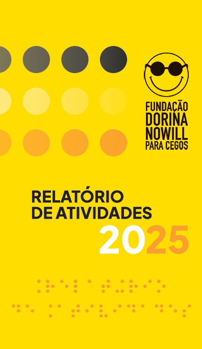

CAPA
PALAVRA DA PRESIDÊNCIA E DA SUPERINTENDÊNCIA, página página2
SOBRE A FUNDAÇÃO DORINA NOWILL PARA CEGOS, página página2
PROPÓSITO, VALORES & VISÃO, páginapágina 3
NÚMEROS DA DEFICIÊNCIA VISUAL NO MUNDO, páginapágina 3
ACESSO À INFORMAÇÃO, páginapágina 3
DORINATECA BIBLIOTECA DIGITAL DA FUNDAÇÃO, páginapágina 4
REDE DE LEITURA INCLUSIVA, páginapágina 4
LEGO® BRAILLE BRICKS, páginapágina 4
ACESSO À AUTONOMIA, páginapágina 4
ACESSO À EDUCAÇÃO, página página5
ACESSO AO TRABALHO, páginapágina 5
PARCEIROS DE VISÃO, páginapágina 7
FAÇA PARTE DESSA HISTÓRIA, página página8